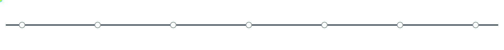

One principal path at a time.
PRODUCTION ASSETS
These images may ship. The page mockups may not.
Seven equal visual stages. Every node links to an explainer.
Six transparent component masters with four responsive WebP sizes.
Use for relevant Photonics signals; do not reuse as a generic image for unrelated stories.
Icons, bars, waterfalls and state changes remain sharp and update from sourced data.
IMPLEMENTATION QA
Select an asset and test scale and position inside the exact shared square art stage.
MEANINGFUL MOTION
Disable your operating-system animation setting to inspect the reduced-motion fallback.

One principal path at a time.
Play on selection or explicit reaction playback.
Runs only when review progress changes.
Only genuinely live data pulses.
REFERENCE HISTORY
Use the approved v2 set first. These establish intent; none are production backgrounds.